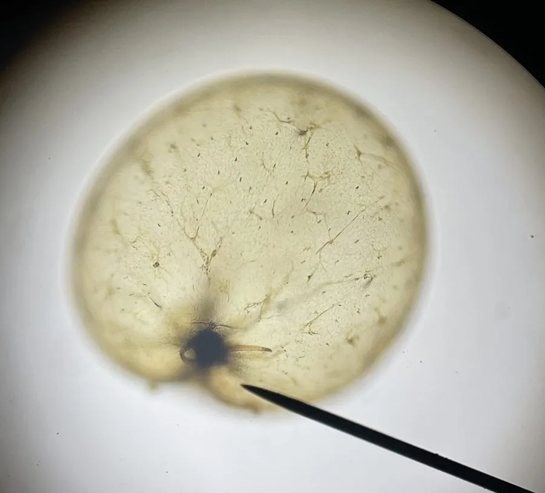

其他无脊椎动物 · 动物界
夜光虫 Noctiluca scintillans

细胞球形、受扰动会发出蓝光的单细胞甲藻，大量繁殖时形成赤潮并使海水夜间发亮，死亡分解会造成缺氧。
- 分类
- 门甲藻门纲甲藻纲目夜光藻目科夜光藻科属夜光藻属
- 栖息环境
- 温带与亚热带近海的表层水体，随潮流和风浪聚集
- 地理分布
- 世界各地的温带与亚热带近海，中国渤海、黄海、东海和南海均有分布
- 保护级别
- 无保护问题；赤潮发生与海水富营养化密切相关
物种志
夜光虫是一种单细胞的甲藻，细胞呈球形，直径约零点二至二毫米，是甲藻中体型较大的种类。它的细胞质无色透明，内含许多小液泡，细胞表面有一条明显的纵沟，伸出一根细长的触手，用来捕捉食物。它没有叶绿体，不能进行光合作用，靠吞噬藻类、细菌和有机颗粒为生，是异养性的甲藻。
它分布于世界各地的温带和亚热带近海，在中国渤海、黄海、东海和南海都有分布，常在春季和夏季大量繁殖。当它受到波浪、船桨或潮汐的扰动时，细胞内的荧光颗粒会发出淡蓝色的闪光，大量个体聚集时海面便泛起一片幽蓝的海火。它大量繁殖时会形成赤潮，使海水变成红褐色，虽然本身不产生毒素，但密集的细胞会消耗水中氧气，死亡后分解进一步造成缺氧，导致鱼虾死亡；它还会分泌氨，刺激鱼鳃。赤潮期间应减少亲水活动，避免接触变色的海水，不采食该海域的贝类。它尚无保护级别，赤潮的发生与富营养化密切相关。
形态与习性
- 细胞球形，直径约零点二至二毫米
- 营养方式无异养光合能力，靠吞噬藻类与有机颗粒
- 发光受扰动时发出淡蓝色闪光
- 赤潮大量繁殖使海水变红褐色
- 危害消耗氧气并分泌氨，可致鱼虾死亡
- 防护赤潮期减少亲水活动，不采食该海域贝类
趣味知识
- 夜里海浪一拍就闪出蓝光，那是它被扰动后发出的冷光。
- 它自己不会光合作用，靠吞吃别的藻类和有机碎屑过日子。
- 它聚集成的赤潮本身无毒，却能把水里的氧耗光，让鱼窒息。